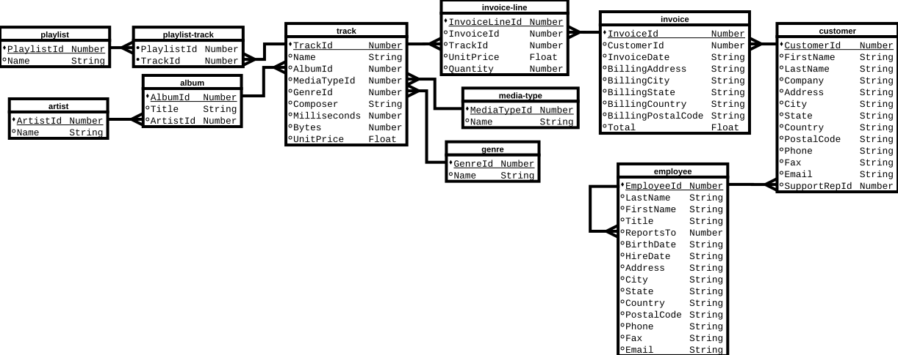

1 Relational Algebra and SQL
The dominant language for writing relational database queries is SQL. Unfortunately, SQL tends to get very complicated very quickly as the query's complexity increases. Furthermore, SQL is far removed, syntactically, from much of the theoretical basis of querying, relation algebra. For creating complicated queries, it may be easier to prototype them in Python using modules from the relational algebra program, Relational. I forked the code on GitHub and added additional operators as well as code to interface with Emacs Org Mode Babel. Also required to run the examples is the Chinook database and a CSV version of the database.
1.1 Interacting with Relational
import sys sys.path.append("/home/devin/projects/relational/") from relational.relation_org import RelationOrg from relational.relation import Relation root_fp = "/home/devin/notes/sql-relational-algebra/chinook/csv/" album = Relation(root_fp + "album.csv") artist = Relation(root_fp + "artist.csv") customer = Relation(root_fp + "customer.csv") employee = Relation(root_fp + "employee.csv") genre = Relation(root_fp + "genre.csv") invoice_line = Relation(root_fp + "invoice-line.csv") invoice = Relation(root_fp + "invoice.csv") media_type = Relation(root_fp + "media-type.csv") playlist_track = Relation(root_fp + "playlist-track.csv") playlist = Relation(root_fp + "playlist.csv") track = Relation(root_fp + "track.csv") # END SETUP
Relational provides a graphical interface, but I find it easier to interact
with the code using Python. Relational's Relation class represents relational
tables and their operators. In the above code, the path to the Relational
code is added to sys.path and Relation objects are created for each CSV file.
The first line in each CSV file are the column names. Every element in each
file is quoted with double quotes. The CSV data entries are parsed into four
possible types; string, integer, float, and date, which are defined in
rtypes.py. Relational does not have a null type. Instead, three dashes,
"---", are used to represent null values in the CSV files. Relational treats null
values as equal, but SQL sometimes treats them as equal and sometimes not, so
some of the examples may need to be changed to treat null equality as
desired. Wikipedia has an extensive article on the subject.
I am using Emacs Org mode to run these pieces of code. Org mode supports
literate programming. One feature of literate programming is the
pre-processor. Org mode allows you to name code blocks and reference them
else-ware in other code blocks. The above code block is named setup and is
referenced using <<setup>>. The :noweb yes argument tells Org to do the
replacement.
With the module, relation_org, it is possible to use Emacs Org tables as
input to Org Babel code blocks. It provides the class RelationOrg that is
derived from the Relation class. In Org, an input table must be given a
unique name. The name can be given as a :var argument in the Babel code
block. The column names must be given in the first row, and the table must not
have any horizontal separators. The :var variables become global variables in
the Babel code block and the table data is converted to a list of lists.
| key | value | | 1 | A | #+BEGIN_SRC python :var in_table=alpha_table :noweb yes <<setup>> from relational.relation_org import RelationOrg alpha = RelationOrg(in_table) #+END_SRC
In the example, the alpha_table is given the value:
alpha_table = [["key", "value"],["1","A"]]
RelationOrg's initializer can take either a list of lists or a Relation object. It is used to convert Org tables to Relation objects and to print out Relation objects as Org tables, requiring the Python module tabulate.
1.2 Chinook Database
For this post, I will be using the Chinook Database for performing queries. It is an open source database available for many different database servers, but does not include CSV files. The example Org file will need to be modified to correctly reference the Chinook Database, the CSV files, and the Relational source code.
The Chinook database has the following entity-relationship model.

1.3 Relational Algebra in Python
All relational algebra operations are Relation class methods. Each of
these methods returns a new Relation object. Additionally, the Relation
object has __eq__, __str__, __len__, __iter__, and __contains__ methods
defined; and furthermore, the RelationOrg class overrides the __str__ method
to return an Org table string.
Relational is not a full fledged database system and it is slow. Internally,
the table data is stored as a set of tuple rows, and the header is its own
Header object type. The data is accessible through the Relation content
variable and header through the header variable.
1.3.1 Selection
In relational algebra, the selection function selects rows. The selection method takes a single string of Python code that returns true or false, which it passes to the compile Python internal and then to eval. The table's column names get turned into variables global to the code being evaluated. During processing, numeric strings get turned into numbers (integers or floats) and dates get turned into datetime objects. The selection method returns a new table containing only rows having the specified property. In this example, only rows whose ArtistId column is 1 are returned.
import sys sys.path.append("/home/devin/projects/relational/") from relational.relation_org import RelationOrg from relational.relation import Relation root_fp = "/home/devin/notes/sql-relational-algebra/chinook/csv/" album = Relation(root_fp + "album.csv") artist = Relation(root_fp + "artist.csv") customer = Relation(root_fp + "customer.csv") employee = Relation(root_fp + "employee.csv") genre = Relation(root_fp + "genre.csv") invoice_line = Relation(root_fp + "invoice-line.csv") invoice = Relation(root_fp + "invoice.csv") media_type = Relation(root_fp + "media-type.csv") playlist_track = Relation(root_fp + "playlist-track.csv") playlist = Relation(root_fp + "playlist.csv") track = Relation(root_fp + "track.csv") # END SETUP sel = album.selection("ArtistId == 1") return str(RelationOrg(sel))
import sys sys.path.append("/home/devin/projects/relational/") from relational.relation_org import RelationOrg from relational.relation import Relation root_fp = "/home/devin/notes/sql-relational-algebra/chinook/csv/" album = Relation(root_fp + "album.csv") artist = Relation(root_fp + "artist.csv") customer = Relation(root_fp + "customer.csv") employee = Relation(root_fp + "employee.csv") genre = Relation(root_fp + "genre.csv") invoice_line = Relation(root_fp + "invoice-line.csv") invoice = Relation(root_fp + "invoice.csv") media_type = Relation(root_fp + "media-type.csv") playlist_track = Relation(root_fp + "playlist-track.csv") playlist = Relation(root_fp + "playlist.csv") track = Relation(root_fp + "track.csv") # END SETUP sel = employee.selection("ReportsTo == '---'") return str(RelationOrg(sel))
1.3.2 Projection
Projection performs the same function as SQL selection. It takes one or more string arguments or a single list, the names of the columns to include in the return table.
import sys sys.path.append("/home/devin/projects/relational/") from relational.relation_org import RelationOrg from relational.relation import Relation root_fp = "/home/devin/notes/sql-relational-algebra/chinook/csv/" album = Relation(root_fp + "album.csv") artist = Relation(root_fp + "artist.csv") customer = Relation(root_fp + "customer.csv") employee = Relation(root_fp + "employee.csv") genre = Relation(root_fp + "genre.csv") invoice_line = Relation(root_fp + "invoice-line.csv") invoice = Relation(root_fp + "invoice.csv") media_type = Relation(root_fp + "media-type.csv") playlist_track = Relation(root_fp + "playlist-track.csv") playlist = Relation(root_fp + "playlist.csv") track = Relation(root_fp + "track.csv") # END SETUP proj = genre.projection("Name") return str(RelationOrg(proj))
1.3.3 Rename
Rename takes a dictionary argument where the keys are the current column names to replace and the values are the corresponding replacements, with all keys and values being strings. A new table is returned with renamed columns. You will have to use this quite often, since the joining methods require that their input tables have all different column names.
import sys sys.path.append("/home/devin/projects/relational/") from relational.relation_org import RelationOrg from relational.relation import Relation root_fp = "/home/devin/notes/sql-relational-algebra/chinook/csv/" album = Relation(root_fp + "album.csv") artist = Relation(root_fp + "artist.csv") customer = Relation(root_fp + "customer.csv") employee = Relation(root_fp + "employee.csv") genre = Relation(root_fp + "genre.csv") invoice_line = Relation(root_fp + "invoice-line.csv") invoice = Relation(root_fp + "invoice.csv") media_type = Relation(root_fp + "media-type.csv") playlist_track = Relation(root_fp + "playlist-track.csv") playlist = Relation(root_fp + "playlist.csv") track = Relation(root_fp + "track.csv") # END SETUP rn = employee.rename({"LastName": "Family", "FirstName": "Given"}) return str(RelationOrg(rn))
1.3.4 Product
Performs a Cartesian product between two tables and returns a new table. The method takes a table as its argument, and applies its argument and it's object to the product operation. None of the columns names in one table can be equal to any column names in the other, so renaming may be necessary.
import sys sys.path.append("/home/devin/projects/relational/") from relational.relation_org import RelationOrg from relational.relation import Relation root_fp = "/home/devin/notes/sql-relational-algebra/chinook/csv/" album = Relation(root_fp + "album.csv") artist = Relation(root_fp + "artist.csv") customer = Relation(root_fp + "customer.csv") employee = Relation(root_fp + "employee.csv") genre = Relation(root_fp + "genre.csv") invoice_line = Relation(root_fp + "invoice-line.csv") invoice = Relation(root_fp + "invoice.csv") media_type = Relation(root_fp + "media-type.csv") playlist_track = Relation(root_fp + "playlist-track.csv") playlist = Relation(root_fp + "playlist.csv") track = Relation(root_fp + "track.csv") # END SETUP prod = employee.product(media_type) return str(RelationOrg(prod))
1.3.5 Set Operations
Relation provides three set operations; union, intersection, and difference. I added the symmetric difference operation. While symmetric difference is not strictly part of relational algebra, it is defined in terms of the other relational algebra set operators. Each of the set methods require that both input tables have the same column names.
1.3.5.1 Union
import sys sys.path.append("/home/devin/projects/relational/") from relational.relation_org import RelationOrg from relational.relation import Relation root_fp = "/home/devin/notes/sql-relational-algebra/chinook/csv/" album = Relation(root_fp + "album.csv") artist = Relation(root_fp + "artist.csv") customer = Relation(root_fp + "customer.csv") employee = Relation(root_fp + "employee.csv") genre = Relation(root_fp + "genre.csv") invoice_line = Relation(root_fp + "invoice-line.csv") invoice = Relation(root_fp + "invoice.csv") media_type = Relation(root_fp + "media-type.csv") playlist_track = Relation(root_fp + "playlist-track.csv") playlist = Relation(root_fp + "playlist.csv") track = Relation(root_fp + "track.csv") # END SETUP e_state = employee.projection("State") c_state = customer.projection("State") union = e_state.union(c_state) return str(RelationOrg(union))
1.3.5.2 Intersection
import sys sys.path.append("/home/devin/projects/relational/") from relational.relation_org import RelationOrg from relational.relation import Relation root_fp = "/home/devin/notes/sql-relational-algebra/chinook/csv/" album = Relation(root_fp + "album.csv") artist = Relation(root_fp + "artist.csv") customer = Relation(root_fp + "customer.csv") employee = Relation(root_fp + "employee.csv") genre = Relation(root_fp + "genre.csv") invoice_line = Relation(root_fp + "invoice-line.csv") invoice = Relation(root_fp + "invoice.csv") media_type = Relation(root_fp + "media-type.csv") playlist_track = Relation(root_fp + "playlist-track.csv") playlist = Relation(root_fp + "playlist.csv") track = Relation(root_fp + "track.csv") # END SETUP e_state = employee.projection("State") c_state = customer.projection("State") inter = c_state.intersection(e_state) return str(RelationOrg(inter))
1.3.5.3 Difference
import sys sys.path.append("/home/devin/projects/relational/") from relational.relation_org import RelationOrg from relational.relation import Relation root_fp = "/home/devin/notes/sql-relational-algebra/chinook/csv/" album = Relation(root_fp + "album.csv") artist = Relation(root_fp + "artist.csv") customer = Relation(root_fp + "customer.csv") employee = Relation(root_fp + "employee.csv") genre = Relation(root_fp + "genre.csv") invoice_line = Relation(root_fp + "invoice-line.csv") invoice = Relation(root_fp + "invoice.csv") media_type = Relation(root_fp + "media-type.csv") playlist_track = Relation(root_fp + "playlist-track.csv") playlist = Relation(root_fp + "playlist.csv") track = Relation(root_fp + "track.csv") # END SETUP e_state = employee.projection("State") c_state = customer.projection("State") diff = c_state.difference(e_state) return str(RelationOrg(diff))
The SQL equivalent to difference is the EXCEPT operator. Not all SQL
engines have the EXCEPT operator, such as MySQL. Wikipedia has an example
of how to create an except, using left outer join.
1.3.5.4 Symmetric Difference, XOR
import sys sys.path.append("/home/devin/projects/relational/") from relational.relation_org import RelationOrg from relational.relation import Relation root_fp = "/home/devin/notes/sql-relational-algebra/chinook/csv/" album = Relation(root_fp + "album.csv") artist = Relation(root_fp + "artist.csv") customer = Relation(root_fp + "customer.csv") employee = Relation(root_fp + "employee.csv") genre = Relation(root_fp + "genre.csv") invoice_line = Relation(root_fp + "invoice-line.csv") invoice = Relation(root_fp + "invoice.csv") media_type = Relation(root_fp + "media-type.csv") playlist_track = Relation(root_fp + "playlist-track.csv") playlist = Relation(root_fp + "playlist.csv") track = Relation(root_fp + "track.csv") # END SETUP e_state = employee.projection("State") c_state = customer.projection("State") sym = e_state.symmetric_diff(c_state) return str(RelationOrg(sym))
1.3.6 Joins
The Relational program comes with most of the relational algebra join
operations including the extended relational algebra outer-join
operations. I added semijoin_left, semijoin_right, and antijoin.
Also note that null values are considered equal.
1.3.6.1 Natural Join and Semijoin
The natural join methods (join, semijoin_left, and semijoin_right)
each take a table as an argument and join its table object to the argument
table. Each join function returns a new table. semijoin_left returns
only those columns in the method's object, while semijoin_right returns
only those columns in the table argument. The join method returns columns
from both tables. Tables are joined on columns with equivalent
names. If there are no names in common, then the Cartesian product is
returned.
1.3.6.1.1 Natural Join
import sys sys.path.append("/home/devin/projects/relational/") from relational.relation_org import RelationOrg from relational.relation import Relation root_fp = "/home/devin/notes/sql-relational-algebra/chinook/csv/" album = Relation(root_fp + "album.csv") artist = Relation(root_fp + "artist.csv") customer = Relation(root_fp + "customer.csv") employee = Relation(root_fp + "employee.csv") genre = Relation(root_fp + "genre.csv") invoice_line = Relation(root_fp + "invoice-line.csv") invoice = Relation(root_fp + "invoice.csv") media_type = Relation(root_fp + "media-type.csv") playlist_track = Relation(root_fp + "playlist-track.csv") playlist = Relation(root_fp + "playlist.csv") track = Relation(root_fp + "track.csv") # END SETUP cn = customer.rename({"SupportRepId": "EmployeeId", "LastName": "cLastName", "FirstName": "cFirstName", "Company": "cCompany", "Address": "cAddress", "City": "cCity", "State": "cState", "Country": "cCountry", "PostalCode": "cPostalCode", "Phone": "cPhone", "Fax": "cFax", "Email": "cEmail"}) jn = employee.join(cn) return str(RelationOrg(jn))
1.3.6.1.2 Semijoin Left
import sys sys.path.append("/home/devin/projects/relational/") from relational.relation_org import RelationOrg from relational.relation import Relation root_fp = "/home/devin/notes/sql-relational-algebra/chinook/csv/" album = Relation(root_fp + "album.csv") artist = Relation(root_fp + "artist.csv") customer = Relation(root_fp + "customer.csv") employee = Relation(root_fp + "employee.csv") genre = Relation(root_fp + "genre.csv") invoice_line = Relation(root_fp + "invoice-line.csv") invoice = Relation(root_fp + "invoice.csv") media_type = Relation(root_fp + "media-type.csv") playlist_track = Relation(root_fp + "playlist-track.csv") playlist = Relation(root_fp + "playlist.csv") track = Relation(root_fp + "track.csv") # END SETUP cn = customer.rename({"SupportRepId": "EmployeeId", "LastName": "cLastName", "FirstName": "cFirstName", "Company": "cCompany", "Address": "cAddress", "City": "cCity", "State": "cState", "Country": "cCountry", "PostalCode": "cPostalCode", "Phone": "cPhone", "Fax": "cFax", "Email": "cEmail"}) jn = employee.semijoin_left(cn) return str(RelationOrg(jn))
1.3.6.1.3 Semijoin Right
import sys sys.path.append("/home/devin/projects/relational/") from relational.relation_org import RelationOrg from relational.relation import Relation root_fp = "/home/devin/notes/sql-relational-algebra/chinook/csv/" album = Relation(root_fp + "album.csv") artist = Relation(root_fp + "artist.csv") customer = Relation(root_fp + "customer.csv") employee = Relation(root_fp + "employee.csv") genre = Relation(root_fp + "genre.csv") invoice_line = Relation(root_fp + "invoice-line.csv") invoice = Relation(root_fp + "invoice.csv") media_type = Relation(root_fp + "media-type.csv") playlist_track = Relation(root_fp + "playlist-track.csv") playlist = Relation(root_fp + "playlist.csv") track = Relation(root_fp + "track.csv") # END SETUP cn = customer.rename({"SupportRepId": "EmployeeId", "LastName": "cLastName", "FirstName": "cFirstName", "Company": "cCompany", "Address": "cAddress", "City": "cCity", "State": "cState", "Country": "cCountry", "PostalCode": "cPostalCode", "Phone": "cPhone", "Fax": "cFax", "Email": "cEmail"}) jn = employee.semijoin_right(cn) return str(RelationOrg(jn))
1.3.6.2 Theta Join
The thetajoin method requires two arguments; the table to join on and a selection argument. Internally, it performs the Cartesian product on the two tables and selects those rows from the resulting table satisfying the input expression. So all column names must be unique. Refer to the section on Selection for details on the selection argument.
import sys sys.path.append("/home/devin/projects/relational/") from relational.relation_org import RelationOrg from relational.relation import Relation root_fp = "/home/devin/notes/sql-relational-algebra/chinook/csv/" album = Relation(root_fp + "album.csv") artist = Relation(root_fp + "artist.csv") customer = Relation(root_fp + "customer.csv") employee = Relation(root_fp + "employee.csv") genre = Relation(root_fp + "genre.csv") invoice_line = Relation(root_fp + "invoice-line.csv") invoice = Relation(root_fp + "invoice.csv") media_type = Relation(root_fp + "media-type.csv") playlist_track = Relation(root_fp + "playlist-track.csv") playlist = Relation(root_fp + "playlist.csv") track = Relation(root_fp + "track.csv") # END SETUP cn = customer.rename({"LastName": "cLastName", "FirstName": "cFirstName", "Company": "cCompany", "Address": "cAddress", "City": "cCity", "State": "cState", "Country": "cCountry", "PostalCode": "cPostalCode", "Phone": "cPhone", "Fax": "cFax", "Email": "cEmail"}) jn = employee.thetajoin(cn, "SupportRepId == 1 + EmployeeId") return str(RelationOrg(jn))
SELECT DISTINCT EmployeeId, SupportRepId, Employee.LastName AS eLastName, Employee.FirstName AS eFirstName, Employee.Title AS eTitle, Employee.ReportsTo AS eReportsTo, Employee.BirthDate AS eBirthDate, Employee.HireDate AS eHireDate, Employee.Address AS eAddress, Employee.City AS eCity, Employee.State AS eState, Employee.Country AS eCountry, Employee.PostalCode AS ePostalCode, Employee.Phone AS ePhone, Employee.Fax AS eFax, Employee.Email AS eEmail, Customer.CustomerId AS cCustomerId, Customer.FirstName AS cFirstName, Customer.LastName AS cLastName, Customer.Company AS cCompany, Customer.Address AS cAddress, Customer.City AS cCity, Customer.State AS cState, Customer.Country AS cCountry, Customer.PostalCode AS cPostalCode, Customer.Phone AS cPhone, Customer.Fax AS cFax, Customer.Email AS cEmail FROM Employee JOIN Customer ON Employee.EmployeeId = 1 + Customer.SupportRepId;
1.3.6.3 Outer Joins
Relation provides full outer join (outer), outer join left (outer_left),
and outer join right (outer_right). When printing the result of
an outer join, null is represented by "—". Like the natural join
methods, these methods take a single table argument and perform a join with
the method's object.
1.3.6.3.1 Outer Left Join
import sys sys.path.append("/home/devin/projects/relational/") from relational.relation_org import RelationOrg from relational.relation import Relation root_fp = "/home/devin/notes/sql-relational-algebra/chinook/csv/" album = Relation(root_fp + "album.csv") artist = Relation(root_fp + "artist.csv") customer = Relation(root_fp + "customer.csv") employee = Relation(root_fp + "employee.csv") genre = Relation(root_fp + "genre.csv") invoice_line = Relation(root_fp + "invoice-line.csv") invoice = Relation(root_fp + "invoice.csv") media_type = Relation(root_fp + "media-type.csv") playlist_track = Relation(root_fp + "playlist-track.csv") playlist = Relation(root_fp + "playlist.csv") track = Relation(root_fp + "track.csv") # END SETUP cn = customer.rename({"SupportRepId": "EmployeeId", "LastName": "cLastName", "FirstName": "cFirstName", "Company": "cCompany", "Address": "cAddress", "City": "cCity", "State": "cState", "Country": "cCountry", "PostalCode": "cPostalCode", "Phone": "cPhone", "Fax": "cFax", "Email": "cEmail"}) jn = employee.outer_left(cn) return str(RelationOrg(jn))
1.3.6.3.2 Outer Right Join
import sys sys.path.append("/home/devin/projects/relational/") from relational.relation_org import RelationOrg from relational.relation import Relation root_fp = "/home/devin/notes/sql-relational-algebra/chinook/csv/" album = Relation(root_fp + "album.csv") artist = Relation(root_fp + "artist.csv") customer = Relation(root_fp + "customer.csv") employee = Relation(root_fp + "employee.csv") genre = Relation(root_fp + "genre.csv") invoice_line = Relation(root_fp + "invoice-line.csv") invoice = Relation(root_fp + "invoice.csv") media_type = Relation(root_fp + "media-type.csv") playlist_track = Relation(root_fp + "playlist-track.csv") playlist = Relation(root_fp + "playlist.csv") track = Relation(root_fp + "track.csv") # END SETUP cn = customer.rename({"SupportRepId": "EmployeeId", "LastName": "cLastName", "FirstName": "cFirstName", "Company": "cCompany", "Address": "cAddress", "City": "cCity", "State": "cState", "Country": "cCountry", "PostalCode": "cPostalCode", "Phone": "cPhone", "Fax": "cFax", "Email": "cEmail"}) jn = employee.outer_right(cn) return str(RelationOrg(jn))
1.3.6.3.3 Full Outer Join
import sys sys.path.append("/home/devin/projects/relational/") from relational.relation_org import RelationOrg from relational.relation import Relation root_fp = "/home/devin/notes/sql-relational-algebra/chinook/csv/" album = Relation(root_fp + "album.csv") artist = Relation(root_fp + "artist.csv") customer = Relation(root_fp + "customer.csv") employee = Relation(root_fp + "employee.csv") genre = Relation(root_fp + "genre.csv") invoice_line = Relation(root_fp + "invoice-line.csv") invoice = Relation(root_fp + "invoice.csv") media_type = Relation(root_fp + "media-type.csv") playlist_track = Relation(root_fp + "playlist-track.csv") playlist = Relation(root_fp + "playlist.csv") track = Relation(root_fp + "track.csv") # END SETUP cn = customer.rename({"SupportRepId": "EmployeeId", "LastName": "cLastName", "FirstName": "cFirstName", "Company": "cCompany", "Address": "cAddress", "City": "cCity", "State": "cState", "Country": "cCountry", "PostalCode": "cPostalCode", "Phone": "cPhone", "Fax": "cFax", "Email": "cEmail"}) jn = employee.outer(cn) return str(RelationOrg(jn))
1.3.6.4 Anti-Join
Relational does not currently provide an anti-join operation. Antijoin returns those entries in the first table that do not have a corresponding joining value in the second table. I added the antijoin operation to Relational using the definition given on Wikipedia;
return self.difference(self.semijoin_left(other))
Like other methods in the Relational class, antijoin takes a single table
class argument, anti-joins it onto the acting object, and returns a new
table object. In the following example, employee is antijoined with
customer, joining on EmployeeId. Equivalently named columns that are not
joined on have to be renamed in one of the tables.
import sys sys.path.append("/home/devin/projects/relational/") from relational.relation_org import RelationOrg from relational.relation import Relation root_fp = "/home/devin/notes/sql-relational-algebra/chinook/csv/" album = Relation(root_fp + "album.csv") artist = Relation(root_fp + "artist.csv") customer = Relation(root_fp + "customer.csv") employee = Relation(root_fp + "employee.csv") genre = Relation(root_fp + "genre.csv") invoice_line = Relation(root_fp + "invoice-line.csv") invoice = Relation(root_fp + "invoice.csv") media_type = Relation(root_fp + "media-type.csv") playlist_track = Relation(root_fp + "playlist-track.csv") playlist = Relation(root_fp + "playlist.csv") track = Relation(root_fp + "track.csv") # END SETUP cn = customer.rename({"SupportRepId": "EmployeeId", "LastName": "cLastName", "FirstName": "cFirstName", "Company": "cCompany", "Address": "cAddress", "City": "cCity", "State": "cState", "Country": "cCountry", "PostalCode": "cPostalCode", "Phone": "cPhone", "Fax": "cFax", "Email": "cEmail"}) jn = employee.antijoin(cn) return str(RelationOrg(jn))
1.3.6.4.1 With Correlated Subqueries
In SQL, the typical way of performing an antijoin is by using correlated subqueries.
SELECT DISTINCT EmployeeId, Employee.LastName, Employee.FirstName, Employee.Title, Employee.ReportsTo, Employee.BirthDate, Employee.HireDate, Employee.Address, Employee.City, Employee.State, Employee.Country, Employee.PostalCode, Employee.Phone, Employee.Fax, Employee.Email FROM Employee WHERE NOT EXISTS (SELECT * FROM Customer WHERE Employee.EmployeeId = Customer.SupportRepId);
This query has the following plan in SQLite.
| SCAN TABLE Employee |
| EXECUTE CORRELATED SCALAR SUBQUERY 1 |
| SEARCH TABLE Customer USING INDEX IFK_CustomerSupportRepId (SupportRepId=?) |
1.3.6.4.2 With the Relation Algebra Definition
SELECT DISTINCT * FROM Employee EXCEPT SELECT EmployeeId, Employee.LastName, Employee.FirstName, Employee.Title, Employee.ReportsTo, Employee.BirthDate, Employee.HireDate, Employee.Address, Employee.City, Employee.State, Employee.Country, Employee.PostalCode, Employee.Phone, Employee.Fax, Employee.Email FROM Employee JOIN Customer ON Employee.EmployeeId = Customer.SupportRepId;
It has the following plan in SQLite.
| SCAN TABLE Employee |
| SCAN TABLE Customer USING COVERING INDEX IFK_CustomerSupportRepId |
| SEARCH TABLE Employee USING INTEGER PRIMARY KEY (rowid=?) |
| COMPOUND SUBQUERIES 1 AND 2 USING TEMP B-TREE (EXCEPT) |
I prefer the relational algebra definition over the correlated subquery
definition. In toolkits such as SQLAlchemy, it is difficult to code
correlated subqueries. This anti-join might not produce the same results
in all cases as the other due to null equality handling
differences. EXCEPT treats them as equivalent. It may be possible to
modify this query to treat nulls as not equal. This issue would only arise
if nulls exist in the joining columns. Null columns could be added to the
anti-join result by intersecting the projection of the two tables' joining
columns, selecting those rows that contain nulls, select the corresponding
rows in the first table, and unioning them to the antijoin result.
1.3.6.5 Division
Division is an operation that is somewhat difficult to grasp, and the traditional correlated SQL query even more difficult. When dividing one table by another, columns unique to the first table are returned. The column names in the second table must be a subset of the first. Rows in the first table can be thought of as being grouped by values in the return columns. A group is returned only if, for every row in the second table, there exists a row in the group with values that exist in the second table.
In Python, like the other Relational methods, division takes a single table argument and returns a relation table object.
import sys sys.path.append("/home/devin/projects/relational/") from relational.relation_org import RelationOrg from relational.relation import Relation root_fp = "/home/devin/notes/sql-relational-algebra/chinook/csv/" album = Relation(root_fp + "album.csv") artist = Relation(root_fp + "artist.csv") customer = Relation(root_fp + "customer.csv") employee = Relation(root_fp + "employee.csv") genre = Relation(root_fp + "genre.csv") invoice_line = Relation(root_fp + "invoice-line.csv") invoice = Relation(root_fp + "invoice.csv") media_type = Relation(root_fp + "media-type.csv") playlist_track = Relation(root_fp + "playlist-track.csv") playlist = Relation(root_fp + "playlist.csv") track = Relation(root_fp + "track.csv") # END SETUP cp = customer.projection("CustomerId", "State") ep = employee.projection("State") div = cp.division(ep) cust = customer.semijoin_left(div) return str(RelationOrg(cust))
1.3.6.5.1 Example
In this example, columns A and B are common to the input tables and C and D are unique to the first. Only the group of rows with 0,0 in C,D have all of the A,B columns values existing in the second table.
| A | B | C | D |
| 0 | 1 | 0 | 0 |
| 1 | 0 | 0 | 0 |
| 1 | 1 | 0 | 0 |
| 1 | 0 | 1 | 0 |
| 1 | 1 | 3 | 1 |
| A | B |
| 1 | 0 |
| 1 | 1 |
import sys sys.path.append("/home/devin/projects/relational/") from relational.relation_org import RelationOrg rel1 = RelationOrg(in_table) rel2 = RelationOrg(other_table) prod = rel1.division(rel2) return str(RelationOrg(prod))
| C | D |
| 0 | 0 |
1.3.6.5.2 Relational Algebra Definition
The Wikipedia page on relational algebra defines the division of table by table as: ; where is the set of columns unique to .
Substituting : Substituting U: Substituting T:
In Relational Python:
import sys sys.path.append("/home/devin/projects/relational/") from relational.relation_org import RelationOrg from relational.relation import Relation root_fp = "/home/devin/notes/sql-relational-algebra/chinook/csv/" album = Relation(root_fp + "album.csv") artist = Relation(root_fp + "artist.csv") customer = Relation(root_fp + "customer.csv") employee = Relation(root_fp + "employee.csv") genre = Relation(root_fp + "genre.csv") invoice_line = Relation(root_fp + "invoice-line.csv") invoice = Relation(root_fp + "invoice.csv") media_type = Relation(root_fp + "media-type.csv") playlist_track = Relation(root_fp + "playlist-track.csv") playlist = Relation(root_fp + "playlist.csv") track = Relation(root_fp + "track.csv") # END SETUP R = customer.projection("CustomerId", "State") S = employee.projection("State") pi_R = R.projection("CustomerId") cross = pi_R.product(S) diff = cross.difference(R) pi_diff = diff.projection("CustomerId") div = pi_R.difference(pi_diff) return str(RelationOrg(div))
1.3.6.5.3 With Correlated Subqueries
The way division is traditionally performed in SQL textbooks is by using correlated subqueries.
SELECT DISTINCT Quotient.CustomerId FROM Customer AS Quotient WHERE NOT EXISTS (SELECT Dividend.state FROM Employee AS Dividend WHERE NOT EXISTS (SELECT Divisor.state FROM Customer AS Divisor WHERE Dividend.state = Divisor.state AND Quotient.CustomerId = Divisor.CustomerId));
14
This query has the following plan in SQLite.
| SCAN TABLE Customer AS Quotient USING COVERING INDEX IFK_CustomerSupportRepId |
| EXECUTE CORRELATED SCALAR SUBQUERY 1 |
| SCAN TABLE Employee AS Dividend |
| EXECUTE CORRELATED SCALAR SUBQUERY 2 |
| SEARCH TABLE Customer AS Divisor USING INTEGER PRIMARY KEY (rowid=?) |
| 14 |
| Run Time: real 0.001 user 0.000000 sys 0.001000 |
1.3.6.5.4 With the Relation Algebra Definition
SELECT DISTINCT CustomerId FROM Customer EXCEPT SELECT CustomerID FROM (SELECT Customer.CustomerId, Employee.state FROM Customer, Employee EXCEPT SELECT CustomerId, state FROM Customer);
| SCAN TABLE Customer USING COVERING INDEX IFK_CustomerSupportRepId |
| SCAN TABLE Employee |
| SCAN TABLE Customer USING COVERING INDEX IFK_CustomerSupportRepId |
| SCAN TABLE Customer |
| COMPOUND SUBQUERIES 4 AND 5 USING TEMP B-TREE (EXCEPT) |
| SCAN SUBQUERY 3 |
| COMPOUND SUBQUERIES 1 AND 2 USING TEMP B-TREE (EXCEPT) |
This query plan is two steps longer than the correlated subquery version; however, I have found this version faster (more on that in the next section), and this version is more easily coded in toolkits like SQLAlchemy. With this version, null values are treated as equal.
1.4 Complex Queries
As I mentioned in the introduction, I find Relational useful for prototyping complex queries. In this example, I will join a bunch of tables in the Chinook database and then increase the complexity in the next section by adding division. You will likely find it easier to follow what is going on in the Relational version rather than the SQL version. The SQL versions were coded after the Relational version was written.
1.4.1 Multiple Joins
The following code joins the tables: artist, album, track, genre, playlist_track, and playlist; they are all joined together in order to find playlists that contain rock and list the artists on those playlists.
import sys sys.path.append("/home/devin/projects/relational/") from relational.relation_org import RelationOrg from relational.relation import Relation root_fp = "/home/devin/notes/sql-relational-algebra/chinook/csv/" album = Relation(root_fp + "album.csv") artist = Relation(root_fp + "artist.csv") customer = Relation(root_fp + "customer.csv") employee = Relation(root_fp + "employee.csv") genre = Relation(root_fp + "genre.csv") invoice_line = Relation(root_fp + "invoice-line.csv") invoice = Relation(root_fp + "invoice.csv") media_type = Relation(root_fp + "media-type.csv") playlist_track = Relation(root_fp + "playlist-track.csv") playlist = Relation(root_fp + "playlist.csv") track = Relation(root_fp + "track.csv") # END SETUP artist_rn = artist.rename({"Name": "artist_name"}) track_rn = track.projection("TrackId", "AlbumId", "GenreId") genre_rn = genre.selection("Name == 'Rock'").projection("GenreId") playlist_rn = playlist.rename({"Name": "playlist_name"}) album_artist = artist_rn.join(album).projection("artist_name", "AlbumId") a_a_track = album_artist.join(track_rn).projection("TrackId", "GenreId", "artist_name") a_a_t_g = a_a_track.join(genre_rn).projection("TrackId", "artist_name") a_a_t_g_pt = a_a_t_g.join(playlist_track) result = a_a_t_g_pt.join(playlist_rn).projection("artist_name", "playlist_name") return str(RelationOrg(result))
In SQL, this translates to:
SELECT DISTINCT a_a_t_g_pt.Name, Playlist.Name FROM Playlist JOIN (SELECT * FROM PlaylistTrack JOIN (SELECT TrackId, a_a_track.Name FROM Genre JOIN (SELECT TrackId, GenreId, album_artist.Name FROM Track JOIN (SELECT Artist.Name, AlbumId FROM Artist JOIN Album USING (ArtistId)) AS album_artist USING (AlbumId)) AS a_a_track USING (GenreId) WHERE Genre.Name = 'Rock') USING (TrackId)) AS a_a_t_g_pt USING (PlaylistId);
You will notice that the Relational version is sequential, while the SQL version is nested, five levels deep. The SQL version could be made more sequential by using temporary tables or common table expressions (CTEs), depending on the SQL engine. However, SQL still requires you to do a projection in every SQL query, so it is never going to be as succinct. Furthermore, if you are using tools such as SQLAlchemy, you are either forced to write plain SQL, hope that the tool supports whatever mechanism the database uses to create temporary tables, or use the nested version.
1.4.2 Adding Division
To make the previous query more interesting, the selected playlists must now contain metal and heavy metal in addition to rock, and we also want to display the genres on the playlist. All of the same joins are made, but there are two tables derived from the genre table; one to join on and the other to divide with. After doing all of the joins, the resulting table is divided by a projected genre table. The resulting table is joined with the table that was divided, getting back those columns that the division removed. The genre table is also joined on to get the genre names. We then project the columns we want.
import sys sys.path.append("/home/devin/projects/relational/") from relational.relation_org import RelationOrg from relational.relation import Relation root_fp = "/home/devin/notes/sql-relational-algebra/chinook/csv/" album = Relation(root_fp + "album.csv") artist = Relation(root_fp + "artist.csv") customer = Relation(root_fp + "customer.csv") employee = Relation(root_fp + "employee.csv") genre = Relation(root_fp + "genre.csv") invoice_line = Relation(root_fp + "invoice-line.csv") invoice = Relation(root_fp + "invoice.csv") media_type = Relation(root_fp + "media-type.csv") playlist_track = Relation(root_fp + "playlist-track.csv") playlist = Relation(root_fp + "playlist.csv") track = Relation(root_fp + "track.csv") # END SETUP artist_rn = artist.rename({"Name": "artist_name"}) track_rn = track.projection("TrackId", "AlbumId", "GenreId") genre_p = genre.projection("GenreId") genre_div = genre.selection("Name == 'Metal' or Name == 'Heavy Metal' or Name == 'Rock'").projection("GenreId") playlist_rn = playlist.rename({"Name": "playlist_name"}) album_artist = artist_rn.join(album).projection("artist_name", "AlbumId") # join on AristId a_a_track = album_artist.join(track_rn).projection("TrackId", "GenreId", "artist_name") # join on AlbumId a_a_t_g = a_a_track.join(genre_p).projection("TrackId", "artist_name", "GenreId") # join on GenreId a_a_t_g_pt = a_a_t_g.join(playlist_track) # join on TrackId, columns: "TrackId", "artist_name", "GenreId", "PlaylistId" a_a_t_g_pt_p = a_a_t_g_pt.join(playlist_rn) # join on PlaylistId, columns: "TrackId", "artist_name", "GenreId", "PlaylistId", "playlist_name" quot = a_a_t_g_pt_p.projection("GenreId", "PlaylistId").division(genre_div) # resulting columns: "PlaylistId" a_a_t_g_pt_p_q = a_a_t_g_pt_p.join(quot) # join on PlaylistId, columns: "TrackId", "artist_name", "GenreId", "PlaylistId", "playlist_name" result = a_a_t_g_pt_p_q.join(genre).projection("artist_name", "playlist_name", "Name") # join on GenreId, "Name' is genre Name return str(len(RelationOrg(result)))
Expanding the division to its relational algebra definition results in:
import sys sys.path.append("/home/devin/projects/relational/") from relational.relation_org import RelationOrg from relational.relation import Relation root_fp = "/home/devin/notes/sql-relational-algebra/chinook/csv/" album = Relation(root_fp + "album.csv") artist = Relation(root_fp + "artist.csv") customer = Relation(root_fp + "customer.csv") employee = Relation(root_fp + "employee.csv") genre = Relation(root_fp + "genre.csv") invoice_line = Relation(root_fp + "invoice-line.csv") invoice = Relation(root_fp + "invoice.csv") media_type = Relation(root_fp + "media-type.csv") playlist_track = Relation(root_fp + "playlist-track.csv") playlist = Relation(root_fp + "playlist.csv") track = Relation(root_fp + "track.csv") # END SETUP artist_rn = artist.rename({"Name": "artist_name"}) track_rn = track.projection("TrackId", "AlbumId", "GenreId") genre_p = genre.projection("GenreId") genre_div = genre.selection("Name == 'Metal' or Name == 'Heavy Metal' or Name == 'Rock'").projection("GenreId") playlist_rn = playlist.rename({"Name": "playlist_name"}) album_artist = artist_rn.join(album).projection("artist_name", "AlbumId") # join on AristId a_a_track = album_artist.join(track_rn).projection("TrackId", "GenreId", "artist_name") # join on AlbumId a_a_t_g = a_a_track.join(genre_p).projection("TrackId", "artist_name", "GenreId") # join on GenreId a_a_t_g_pt = a_a_t_g.join(playlist_track) # join on TrackId, columns: "TrackId", "artist_name", "GenreId", "PlaylistId" a_a_t_g_pt_p = a_a_t_g_pt.join(playlist_rn) # join on PlaylistId, columns: "TrackId", "artist_name", "GenreId", "PlaylistId", "playlist_name" dividend = a_a_t_g_pt_p.projection("GenreId", "PlaylistId") dividend_p = dividend.projection("PlaylistId") V = dividend_p.product(genre_div).difference(dividend).projection("PlaylistId") quot = dividend_p.difference(V) a_a_t_g_pt_p_q = a_a_t_g_pt_p.join(quot) # join on PlaylistId, columns: "TrackId", "artist_name", "GenreId", "PlaylistId", "playlist_name" result = a_a_t_g_pt_p_q.join(genre).projection("artist_name", "playlist_name", "Name") # join on GenreId, "Name' is genre Name return str(len(RelationOrg(result)))
1.4.3 With Correlated Subqueries
SQL's CTE system is used to create three temporary tables; the table
containing the result of joining multiple tables, a table to divide by, and
the division. A temporary table is required for the a_a_t_g_pt_p table
(the table to be divided) because it is referenced twice. The other tables
could be in-lined. Executing this query took almost 23 seconds!
WITH a_a_t_g_pt_p AS (SELECT artist_name, a_a_t_g_pt.GenreId, Playlist.Name AS playlist_name, Playlist.PlaylistId, a_a_t_g_pt.TrackId FROM Playlist JOIN (SELECT a_a_t_g.GenreId, PlaylistId, PlaylistTrack.TrackId, artist_name FROM PlaylistTrack JOIN (SELECT a_a_track.TrackId, artist_name, Genre.GenreId FROM Genre JOIN (SELECT Track.TrackId, Track.GenreId, artist_name FROM Track JOIN (SELECT Artist.Name AS artist_name, AlbumId FROM Artist JOIN Album USING (ArtistId)) AS album_artist USING (AlbumId)) AS a_a_track USING (GenreId)) AS a_a_t_g USING (TrackId)) AS a_a_t_g_pt USING (PlaylistId)), divisor AS (SELECT GenreId FROM Genre WHERE Name = 'Rock' OR Name = 'Metal' OR Name = 'Heavy Metal'), quot AS (SELECT PlaylistId FROM a_a_t_g_pt_p AS Quotient WHERE NOT EXISTS (SELECT divisor.GenreId FROM divisor WHERE NOT EXISTS (SELECT dividend.GenreId FROM a_a_t_g_pt_p AS dividend WHERE Quotient.PlaylistId = dividend.PlaylistId AND divisor.GenreId = dividend.GenreId))) SELECT COUNT(*) FROM ( SELECT DISTINCT artist_name, playlist_name, Genre.Name FROM Genre JOIN (SELECT quot.PlaylistId, TrackId, artist_name, GenreId, playlist_name FROM a_a_t_g_pt_p JOIN quot USING (PlaylistId)) AS a_a_t_g_pt_p_q USING (GenreId));
| SCAN TABLE PlaylistTrack |
| SEARCH TABLE Track USING INTEGER PRIMARY KEY (rowid=?) |
| SEARCH TABLE Playlist USING INTEGER PRIMARY KEY (rowid=?) |
| EXECUTE CORRELATED SCALAR SUBQUERY 2 |
| SCAN TABLE Genre |
| EXECUTE CORRELATED SCALAR SUBQUERY 3 |
| SEARCH TABLE Genre USING COVERING INDEX IPK_Genre (GenreId=? AND rowid=?) |
| SEARCH TABLE Playlist USING INTEGER PRIMARY KEY (rowid=?) |
| SEARCH TABLE PlaylistTrack USING COVERING INDEX IPK_PlaylistTrack (PlaylistId=?) |
| SEARCH TABLE Track USING INTEGER PRIMARY KEY (rowid=?) |
| SEARCH TABLE Album USING INTEGER PRIMARY KEY (rowid=?) |
| SEARCH TABLE Artist USING INTEGER PRIMARY KEY (rowid=?) |
| SEARCH TABLE Playlist USING INTEGER PRIMARY KEY (rowid=?) |
| SEARCH TABLE Genre USING COVERING INDEX IPK_Genre (GenreId=? AND rowid=?) |
| SEARCH TABLE Genre USING INTEGER PRIMARY KEY (rowid=?) |
| SEARCH TABLE Album USING INTEGER PRIMARY KEY (rowid=?) |
| SEARCH TABLE Artist USING INTEGER PRIMARY KEY (rowid=?) |
| SEARCH TABLE PlaylistTrack USING COVERING INDEX IPK_PlaylistTrack (PlaylistId=?) |
| SEARCH TABLE Track USING INTEGER PRIMARY KEY (rowid=?) |
| SEARCH TABLE Genre USING COVERING INDEX IPK_Genre (GenreId=? AND rowid=?) |
| SEARCH TABLE Album USING INTEGER PRIMARY KEY (rowid=?) |
| SEARCH TABLE Artist USING INTEGER PRIMARY KEY (rowid=?) |
| USE TEMP B-TREE FOR DISTINCT |
| SCAN SUBQUERY 1 |
| 232 |
| Run Time: real 23.081 user 23.022000 sys 0.003000 |
1.4.4 With the Relation Algebra Definition
The only difference between this version and the last is how division is executed, and here I did not remove the division from the main query. This query took just 0.06 seconds!
WITH a_a_t_g_pt_p AS (SELECT artist_name, a_a_t_g_pt.GenreId, Playlist.Name AS playlist_name, Playlist.PlaylistId, a_a_t_g_pt.TrackId FROM Playlist JOIN (SELECT a_a_t_g.GenreId, PlaylistId, PlaylistTrack.TrackId, artist_name FROM PlaylistTrack JOIN (SELECT a_a_track.TrackId, artist_name, Genre.GenreId FROM Genre JOIN (SELECT Track.TrackId, Track.GenreId, artist_name FROM Track JOIN (SELECT Artist.Name AS artist_name, AlbumId FROM Artist JOIN Album USING (ArtistId)) AS album_artist USING (AlbumId)) AS a_a_track USING (GenreId)) AS a_a_t_g USING (TrackId)) AS a_a_t_g_pt USING (PlaylistId)), divisor AS (SELECT GenreId FROM Genre WHERE Name = 'Rock' OR Name = 'Metal' OR Name = 'Heavy Metal') SELECT COUNT(*) FROM ( SELECT DISTINCT artist_name, playlist_name, Genre.Name FROM Genre JOIN (SELECT quot.PlaylistId, TrackId, artist_name, GenreId, playlist_name FROM a_a_t_g_pt_p JOIN -- quot (SELECT PlaylistId FROM a_a_t_g_pt_p EXCEPT SELECT PlaylistId FROM (SELECT PlaylistId, divisor.GenreId FROM a_a_t_g_pt_p, divisor EXCEPT SELECT PlaylistId, GenreId FROM a_a_t_g_pt_p)) AS quot -- end quot USING (PlaylistId)) AS a_a_t_g_pt_p_q USING (GenreId));
| SCAN TABLE PlaylistTrack |
| SEARCH TABLE Playlist USING INTEGER PRIMARY KEY (rowid=?) |
| SEARCH TABLE Track USING INTEGER PRIMARY KEY (rowid=?) |
| SEARCH TABLE Genre USING COVERING INDEX IPK_Genre (GenreId=? AND rowid=?) |
| SEARCH TABLE Album USING INTEGER PRIMARY KEY (rowid=?) |
| SEARCH TABLE Artist USING INTEGER PRIMARY KEY (rowid=?) |
| SCAN TABLE PlaylistTrack |
| SEARCH TABLE Playlist USING INTEGER PRIMARY KEY (rowid=?) |
| SEARCH TABLE Track USING INTEGER PRIMARY KEY (rowid=?) |
| SEARCH TABLE Genre USING COVERING INDEX IPK_Genre (GenreId=? AND rowid=?) |
| SEARCH TABLE Album USING INTEGER PRIMARY KEY (rowid=?) |
| SEARCH TABLE Artist USING INTEGER PRIMARY KEY (rowid=?) |
| SCAN TABLE Genre |
| SCAN TABLE PlaylistTrack |
| SEARCH TABLE Playlist USING INTEGER PRIMARY KEY (rowid=?) |
| SEARCH TABLE Track USING INTEGER PRIMARY KEY (rowid=?) |
| SEARCH TABLE Genre USING COVERING INDEX IPK_Genre (GenreId=? AND rowid=?) |
| SEARCH TABLE Album USING INTEGER PRIMARY KEY (rowid=?) |
| SEARCH TABLE Artist USING INTEGER PRIMARY KEY (rowid=?) |
| COMPOUND SUBQUERIES 6 AND 7 USING TEMP B-TREE (EXCEPT) |
| SCAN SUBQUERY 5 |
| COMPOUND SUBQUERIES 3 AND 4 USING TEMP B-TREE (EXCEPT) |
| SCAN TABLE PlaylistTrack |
| SEARCH TABLE Track USING INTEGER PRIMARY KEY (rowid=?) |
| SEARCH TABLE Genre USING COVERING INDEX IPK_Genre (GenreId=? AND rowid=?) |
| SEARCH TABLE Genre USING INTEGER PRIMARY KEY (rowid=?) |
| SEARCH TABLE Playlist USING INTEGER PRIMARY KEY (rowid=?) |
| SEARCH TABLE Album USING INTEGER PRIMARY KEY (rowid=?) |
| SEARCH TABLE Artist USING INTEGER PRIMARY KEY (rowid=?) |
| SEARCH SUBQUERY 2 AS quot USING AUTOMATIC COVERING INDEX (PlaylistId=?) |
| USE TEMP B-TREE FOR DISTINCT |
| SCAN SUBQUERY 1 |
| 232 |
| Run Time: real 0.062 user 0.060000 sys 0.002000 |
1.5 Conclusion
In the non-trivial queries, Python Relational was invaluable in crafting such queries. The complex Relational query is entirely procedural and relatively easy to follow. I had to make notes about what was being joined on and what columns were being returned. Fortunately, it did not have SQL's nested structure. SQL's nested structure makes it difficult to follow. The results of inner queries are syntactically given aliases after they are referenced, requiring you to jump around the code a lot and keep track of what nesting level you are at in order to make procedural sense of what is happening. Unfortunately, nothting like Relational currently exists for relational databases. There was a query language developed at IBM, IBM BS12, that had such qualities. I think Relational can be useful as a guide in learning to query relational databases by practicing creating Relational queries along side database queries, understanding complex SQL queries by having the Relational version to refer back to, and prototyping new queries through sequential development. In database classes, learning relational algebra first and playing with it using Relational, before diving into SQL (or at least before doing anti-join and division in SQL), should help increase understanding.
1.5.1 Further Reading
For going from SQL to Relational, there is a paper by Jan Van den Bussche and Stijn Vansummeren, Translating SQL into the Relational Algebra.